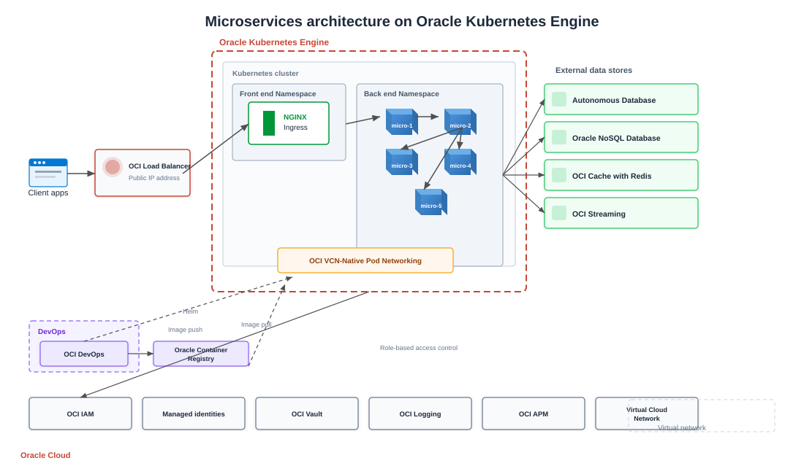

Microservices Architecture on Oracle Kubernetes Engine
Deploying microservices on OKE with OCI Load Balancer, OCIR, Autonomous Database, and OCI Vault for enterprise workloads.
As OCI matured, VF Interactive began delivering OKE-based platforms for clients with Oracle database estates and data residency requirements. This design combines Kubernetes-native microservices with OCI managed services.

Traffic flow
Client traffic hits an OCI Load Balancer public IP, which forwards to an NGINX Ingress controller in the frontend namespace. Ingress rules distribute requests across backend microservices inside the OKE cluster.
Microservice layout
Backend namespaces host microservice1 through microservice5 with the same API-orchestration-data layering used on other clouds. OCI VCN-Native Pod Networking integrates pods directly into your virtual cloud network.
CI/CD and images
OCI DevOps pipelines build, test, and deploy services. Images push to Oracle Container Image Registry (OCIR). Helm charts promote releases across dev, staging, and production clusters.
Data and messaging
Persistence uses Autonomous Database for Oracle and compatible SQL workloads, OCI Cache with Redis for session and query caching, and OCI Streaming for event-driven integration between services.
Security and operations
OCI IAM controls cluster and API access. OCI Vault manages secrets and encryption keys. OCI Monitoring, Logging, and APM provide operational visibility across the stack.